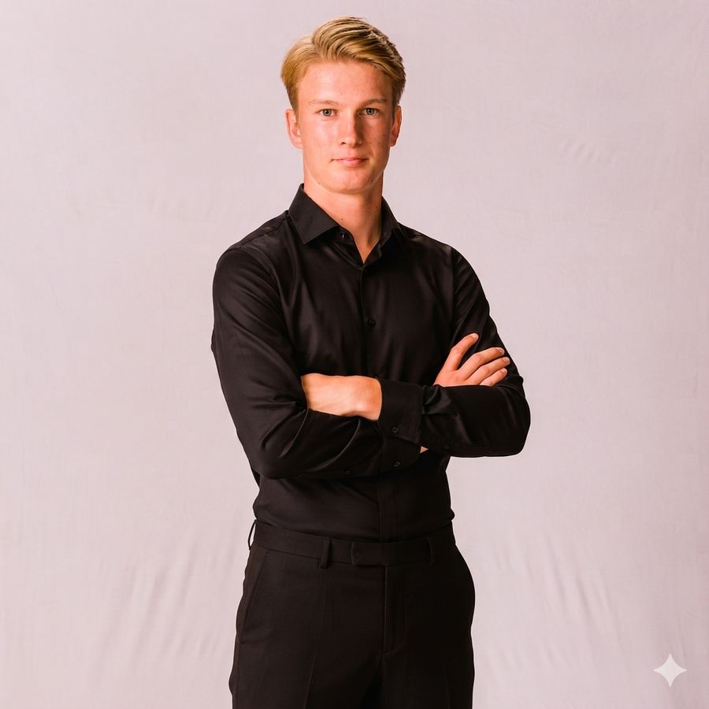

About
Filip Johansson
Designer and product developer who takes ideas from first sketch to working prototype.
Filip Johansson is a Swedish designer and product developer studying for an M.Sc. in Design and Product Development at Linköping University, currently on exchange at National Taiwan University. His work sits where design meets engineering, in products where form and function align.
He covers the whole process, from user and material research and sketching to CAD in SolidWorks and Fusion 360, visualisation in Blender and Unreal Engine, and physical prototyping in the workshop. For his bachelor's thesis with Reijmyre Glasbruk he designed Celina, a ceiling lamp taken from concept to a CNC-machined aluminium prototype and built around the natural variation of hand-blown glass.
Before design, Filip spent more than two years planning transport across the Nordics, which gave him a systems view of production, logistics and real-world use. He has led teams, organised large events and tutors industrial design students at Linköping University, and he brings a structured, hands-on and collaborative way of working to every project.
